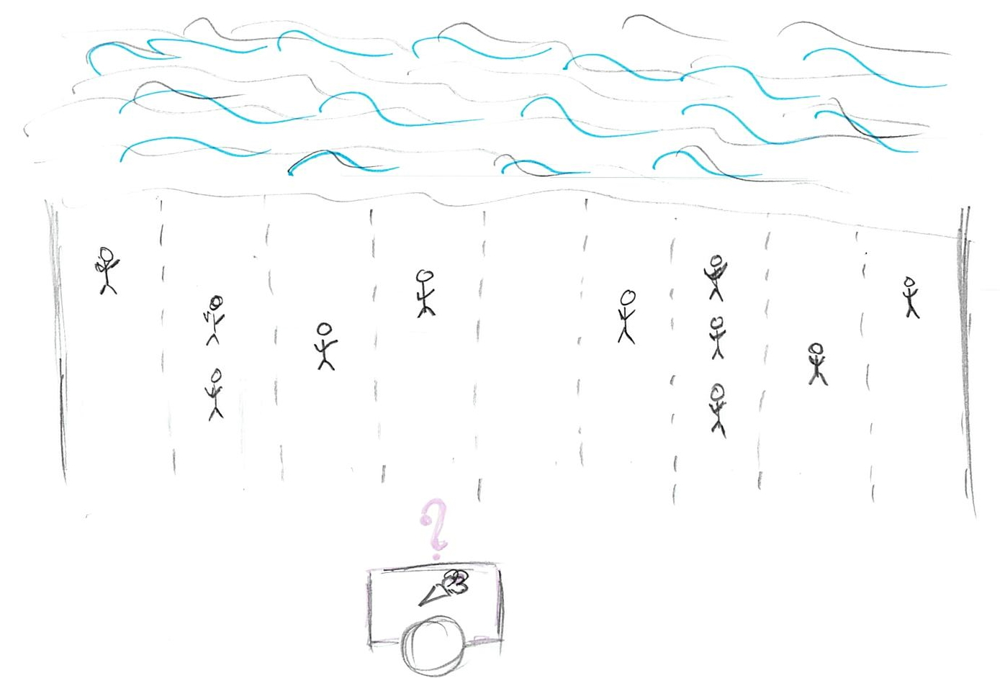
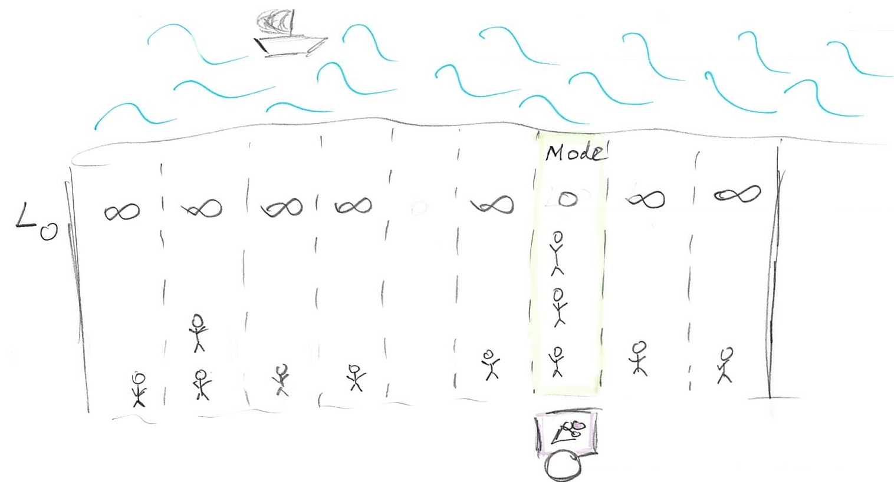
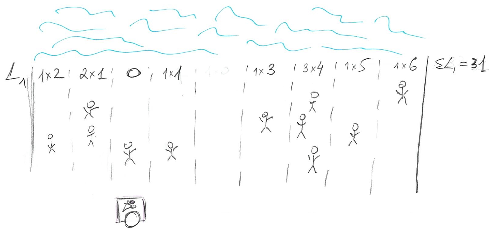
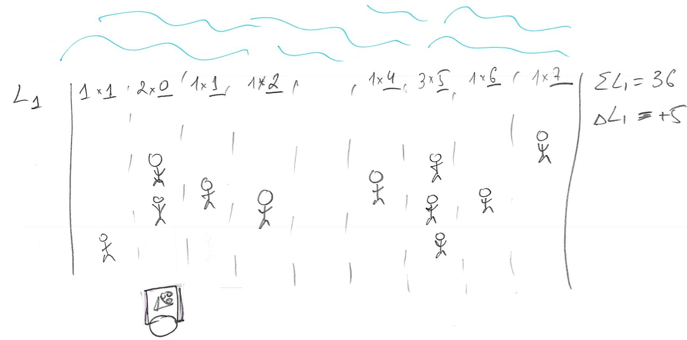
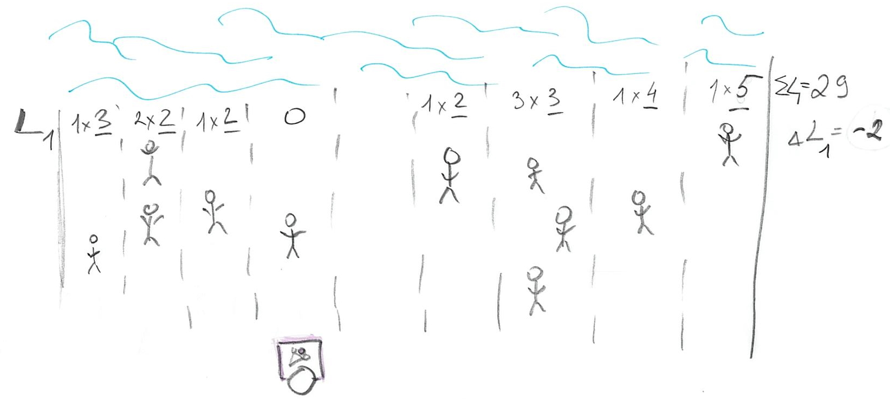
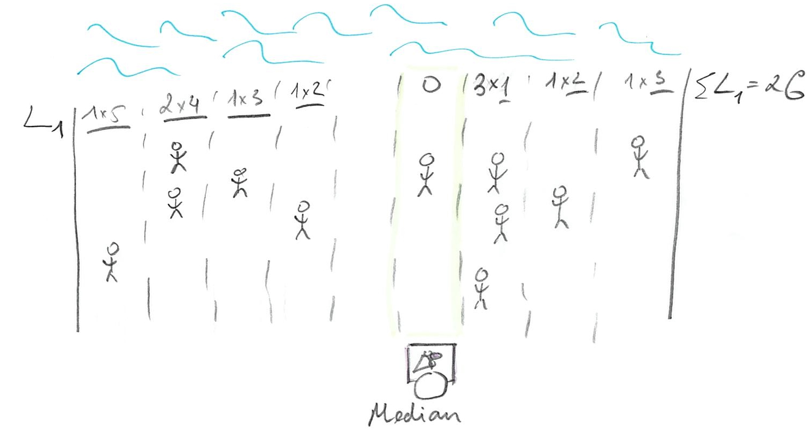
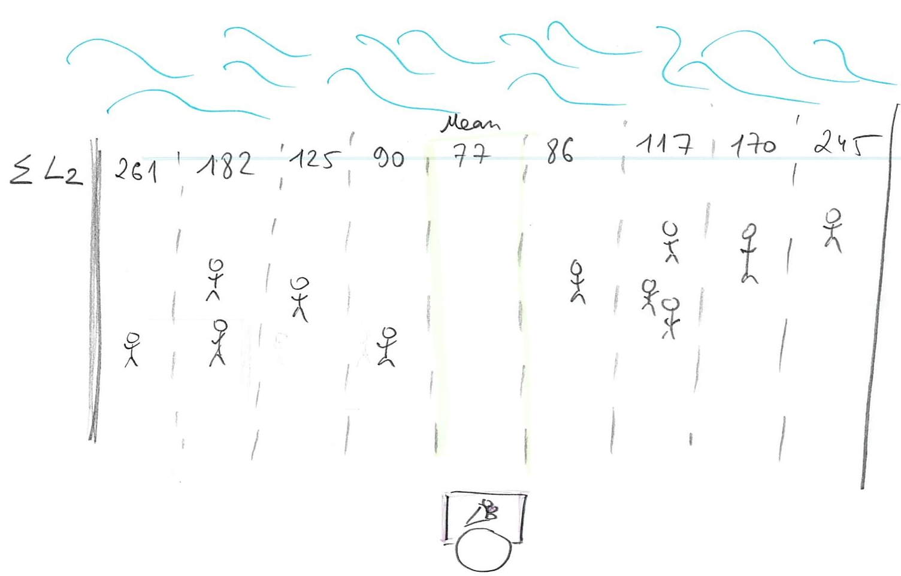
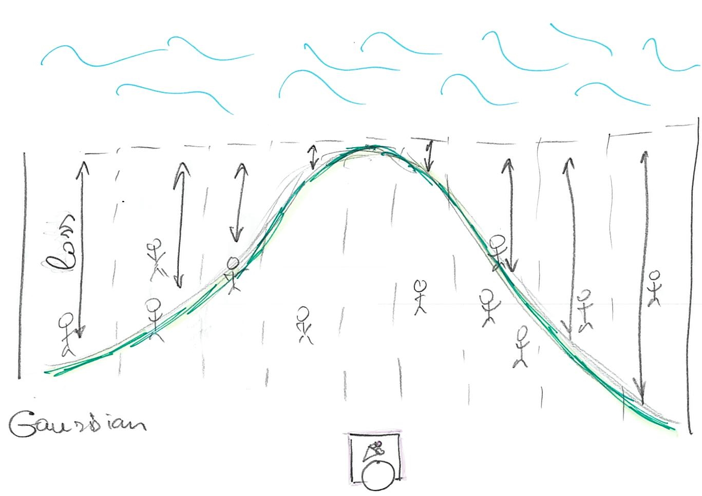
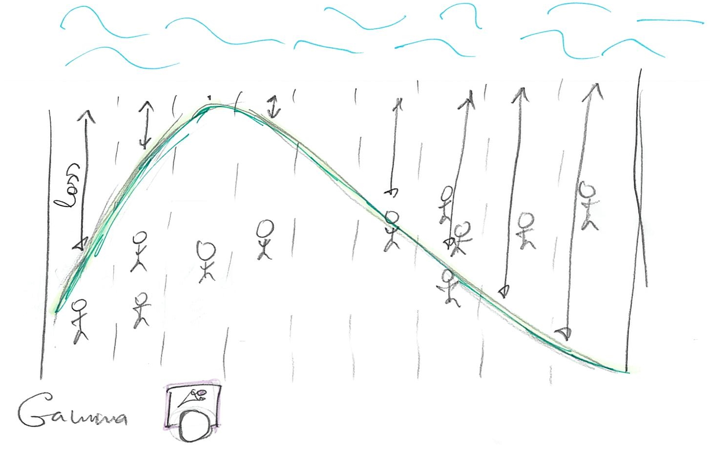

5 Overview of Loss functions
The purpose of this comment is to give you an intuition about loss functions, mentioned in chapter 3. In particular, I want you to understand why different loss functions (L0, L1, and L2) correspond to different point-estimates (mode, median, and mean). Plus, I want you to understand that you can view a choice of a likelihood function, as in picking Gaussian in chapter 4, as being analogous to picking a loss function.
I am afraid that the easiest way to explain why an L2 loss results in mean is via a derivative. So, if you are not confident in your basic calculus skill, it might be useful for you to first watch a few episodes of Essense of Calculus series by Grant Sanderson, a.k.a. 3Blue1Brown. I would suggest watching at least the first three episodes (actually, I would recommend to watch the whole series) but if you are short on time watch only episode 21.
5.1 Loss function, the concept
Imagine that you are selling ice-cream on a beach, so we can assume it is a narrow strip of sand and, therefore, a one-dimensional problem. It is hot, so everyone wants ice-cream (obviously) and you want to maximize the number of ice-creams you sell (obviously). People are distributed in some random (not necessarily uniform or symmetric) way along the beach, so the question is: Where do you put your single ice-cream stand to maximize your profits? The answer depends on your choice of the loss function that describes how distance between a particular person and your stand influences whether person will buy your ice-cream. In other words, it describes the cost of getting to your stand, i.e. walking all-the-way through the sand in that heat. This cost clearly depends on the distance and in the simplest case, it is linearly proportional to the distance: If you need to walk twice the distance, your costs for getting an ice-cream are twice as high. However, the relationship between the distance and cost does not have to be so simple and linear and this is why we have many different loss / cost functions.
We can write a loss/cost function more formally as \(L(stand, person_i)\) where stand is the location of your stand and person_i is a location of a particular ith person. The cost can be either zero or positive, i.e., we assume there is no benefit in walking all the way, only no or some cost. So, where should you put your ice-cream stand?
5.2 L0 (mode)
The simplest loss function is
\[L0(stand, person_i) = \begin{cases}
0, stand == person_i \\
\infty, stand \neq person_i
\end{cases}\]
This function assumes that everybody hates walking so much, that any walk is unbearable and should be avoided. Thus, there is no cost for getting your ice-cream only for people who are positioned right next to your stand. For everybody else, even one meter away, the costs of walking are infinite, so they won’t bother and, therefore, won’t buy your ice-cream. Still, we are in the business of selling one, so where do we put our stand given how lazy our customers are? Well, we just find the biggest group of people and put our stand next to them. No one else will come but at least you got the biggest group of customers you could. If you look at the distribution of your customers along the beach this is the highest peak (that you peak) and it is called the mode of the distribution.

5.3 L1 (median)
The next loss function, that I already mentioned, assumes a simple linear relationship between the distance and the cost \[L1(stand, person_i) = |person_i - stand|\] In other words, the cost is equal to distance (we need | | to get an absolute value, because the person could be “to the left of” of stand, in which case person - stand distance will be negative). So, where should we put our stand? Let us start at a fairly random location so that 3 of our customers are on the left and 7 are on the right.

We can, in principle, compute the actual cost but it is simpler to ask the question of whether we can improve on that cost by moving somewhere else? Imagine that we move to the left where minority of our customers are. Now we have 1 on the left and 8 on the right (plus 2 more at our location).

The problem is, we moved away from the majority of the people so our total cost is original cost - 3 (improvement due to moving close to minority) + 8 (increase in loss due to moving away from majority), so \(\Delta L1 = +5\). Oops, we made it worse! How about moving to the right?

Now that we move towards the majority of customers, we have four on the left and six on the right (plus one at our location). The change in cost is original cost + 4 (loss due to moving away from minority) - 6 (improvement due to moving towards majority), so \(\Delta L1 = -2\). Which gives us an idea: we should try to get even closer to that majority by keeping walking to the right! Eventually, you will get to point of the 50/50. Should you keep moving to the right? Should you move to the left? Should you move at all?

There is no point in moving to the left. You just came from where because moving to the right made things better. However, if you keep moving to the right, you will keep passing people, so that majority now will be on the left and you would be walking away from the majority, raising the costs (and your losses). So, once you get to point where half of your customers are on the left and half are on the right, you cannot do any better. Any movement that gets you from 50/50 means there are more customers on one side (say left, if you moved to the right) and, as we already figured out, your best strategy is to move towards the majority, which gets you back where you started at 50/50 point. That 50/50 points split, when half of customers / probability mass is on one side and half is on the other, is called median.
5.4 L2 (mean)
The classic loss function is Euclidean distance \[L2(stand, person_i) = (person - stand)^2\] Here, every next step becomes progressively harder for our customers. The cost of walking 1 meter is 1 (unit of effort). But walking 2 is \(2^2 = 4\) and is \(3^2=9\) for 3 meters. Thus, the penalty (cost/loss) for being further away from your stand increases as a power law. Still, one needs to sell ice-cream, so one needs to find the best spot where total cost is minimal
\[L2(stand, person) = \sum_{i=1}^{N}{(person_i - stand)^2}\]

Or, we can compute the minimal average cost by dividing the sum by the total number of customers N: \[<L2(stand, person)> = \frac{1}{N}\sum_{i=1}^{N}{(person_i - stand)^2}\]
Conceptually, you find that minimum by walking along the beach in the direction that reduces the cost until you hit the point where it start going up again. This strategy is called gradient descent and, generally speaking, this is how computer finds minima computationally: They make steps in different directions to see which way is down and keep going until things start going up. However, in one-dimensional well-behaving case we have here things are even simpler as you can use calculus to figure out the solution analytically. If you watched the videos I advertised above, you’ll know that the derivative of the function is zero at the extrema (minima or maxima), so we just need to differentiate our average L2 over position of the stand and find where it is zero2.
\[\frac{\partial L2}{\partial stand} = -\frac{2}{N}\sum_{i=1}^{N}{(person_i - stand)}\] As we want \[\frac{\partial L2}{\partial stand} = 0\] we state \[\frac{2}{N}\sum_{i=1}^{N}{(person_i - stand)} = 0.\]
Opening up brackets and rearranging we get
\[- \frac{2}{N}\sum_{i=1}^{N}{person_i} + \frac{2 \cdot N}{N} \cdot stand = 0 \\ 2 \cdot stand = \frac{2}{N}\sum_{i=1}^{N}{person_i} \\ stand = \frac{1}{N}\sum_{i=1}^{N}{person_i}\]
So, the optimal location of your stand is the mean: an average location of all people on the beach.
5.5 L1 (median) vs. L2 (mean)
One problem about the mean is that it is sensitive to outliers. Because the costs grow as a power law, this approach favors a lot of medium-sized distances over lots of smalls ones plus one really large one. Thus, a single person at a far side of the beach would have a big influence on your stand’s location (you already saw the difference in the example above). In data analysis, this means that those outliers will pull your estimates away from the majority of responses. Which is why it might be a good idea to consider using median rather than mean. If you distribution is symmetric, the difference will be negligible but in presence of outliers median, as a point-estimate, is more robust.
5.6 Choosing a likelihood
So far we talked about selling ice-cream on the beach but same question of choosing your loss function applies when you are trying to fit a distribution or a regression line, as in chapter 4. Here, you also have a point-estimate (regression line at each point) and you try to put it in such a way as to minimize the costs of having data points off that line (the distance from the point-estimate of the line and each data point is called a residual). The classic way is to use L2 distance and the approach is called ordinary least squares, as you try to minimize squared residuals.
Alternatively, you can express same costs-of-being-off-the-line using a distribution, such as Gaussian. You put its peak (mean) at the (candidate) location of your point estimate (that point has highest probability, so lowest cost) and the loss is computed as a probability of the residual (distance-to-the-point). You can think about it in terms of the probability that a person will go and buy ice-cream from your stand.

The Gaussian is special because it uses L2 distance, see \((x - \mu)^2\) inside the exponential: \[f(x) = \frac{1}{\sigma \sqrt(2 \pi)}e^{\left(-\frac{1}{2}\frac{(x - \mu)^2}{\sigma^2}\right)}\]
so using it is equivalent to fitting via ordinary least squares. However, as McElreath hinted, you can choose different likelihoods that are different not only in the distance-to-loss formula (like L1 is different from L2) but also in symmetry. Both L1 and L2 (and Gaussian) ignore the sign of the distance. It does not matter whether customers are on the left or on the right. Other distributions, such as Beta, Gamma, or Log Normal are not symmetric, so the same distance will cost differently depending on the side the customer is at.

This allows you to think about the choice of your likelihood distribution in terms of choosing a loss function. Both describe how tolerant you are for points to be off the point estimate (regression line). For example, a t-distribution has heavier tails than a Gaussian (if you want to sound like a real mathematician, you say “leptokurtic”), so its losses for outliers (penalty for larger residuals) are lower. Using it instead of a Gaussian would be similar to changing the loss function from L2 to be more like L1 (e.g. \(|person_i - stand|^{1.5}\)). Conversely, you can pick a symmetric distribution that is narrower than a Gaussian to make residuals penalty even higher (e.g. using \((person_i - stand)^{4}\)). You can also consider other properties: Should it be symmetric? Should it operate only within certain range (1..7 for a Likert scale, 0..1 for proportions, positive values for Gamma)? Should it weight all points equally? As you saw in the examples above, picking a different function moves your cart (regression line), so you should keep in mind that using a different likelihood will move the regression line and produce different estimates and predictions.
How do you pick a likelihood/loss function? It depends on the kind of data you have, on your knowledge about the process that generated the data, robustness of inferences in the presence of outliers, etc. However, most real-life cases you are likely to encounter will be covered by the distributions described in the book (Gaussian, exponential, binomial, Poisson, Gamma, etc.). After finishing the book, you will have a basic understanding of which are most appropiate in typical cases. The atypical cases you’ll have to research yourself!
5.7 Gaussian in frenquentist versus Bayesian statistics
Later on in the book McElreath will note that erroneously assuming normal distribution for residuals ruins your inferences in frequentist statistics but not in Bayesian. This is because picking a distribution means different things in frequentist and Bayesian. As I wrote above, in the Bayesian case, likelihood is merely a loss function that translate distance from a data point to a regression line (residual) into a penalty (again, it determines just how tolerant you are for points off the line). Thus, you are using penalties for observed residuals and having a bad loss function will make your posterior distribution suboptimal but you still can make inferences because it still is based on your actual residuals.
In contrast, in frequentist statistics, when you are stating that your observed residuals are a sample from a particular distribution, your actual residuals are used to determine parameters of this distribution. Then, however, you make your inferences using that distribution not the residuals themselves. This is a very strong conjecture and probably the biggest leap of faith in frequentist statistics saying “I know the true distribution”. Problem is, if you got your likelihood function / distribution wrong, your inferences are based on a model that describes something else not your data. For example, you have a proportion data but you assume Gaussian distribution for residuals and build a model as if your residuals are always symmetrically distributed (not squashed on one side by floor or celing). That model will not be about your data, it will be about normally distributed something else. The numbers for that something else may look good (or bad) but they are not the numbers you are interested in. This is a mistake that is remarkably easy to do because computers won’t stop you from making it. Think back to Chapter 1: Golems don’t care! You can abuse any statistical model/test and they will simply spit out the numbers, even if tests are completely unsuitable for your data. Making sure that distribution is correct and that you are doing the right thing is on you, not the Golem!